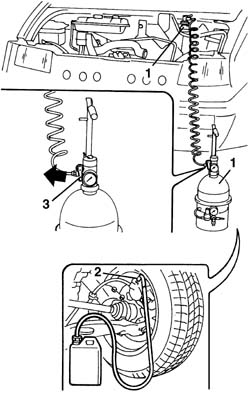

0010T65 HYDRAULIC BRAKE SYSTEM BLEED AIR
- Path
- Procedures > 00 MAINTENANCE > 0010 NEW UNITS AND PLANNED MAINTENANCE > 0010T VEHICLE OIL AND FLUIDS > 0010T65 HYDRAULIC BRAKE SYSTEM BLEED AIR
- Kind
- repair procedure (removal / refitting; the operation number is the code)
- Applies to
- all engines; all production periods
- Interactive page
- https://sloeber94.github.io/elrnDB-fDct/en/#/244000606
Applies to: all engines; all production periods
- Position the vehicle on the lift.
- Check that the brake/clutch fluid is between the MIN and MAX levels.
1. Remove the brake fluid reservoir cap and connect the equipment to the reservoir after having refilled it.
 | Description | Code | Function |
|---|---|---|---|
1 | - | 1.806.097.000 | Hydraulic circuit air bleeding equipment |
- Remove the protective cap for the bleed valve on the brake caliper.
2. Connect the recovery device (pipe and reservoir) to the bleed valve(s) on the brake caliper.
- Open the bleed valve.
3. Open the fluid reservoir tap slowly.
- Wait for all the air in the hydraulic system to escape.
- Close the bleed valve(s) on the brake caliper.
- Repeat the operations described above for the remaining brake calipers.
- Remove the vehicle from the lift.

Topics that link to this page (27)
- 0010T66 MANUAL GEARBOX OIL CHECK LEVEL AND TOP UP IF NECESSARY
- 3310A30 FRONT BRAKE CALIPER ONE R R
- 3310B30 REAR BRAKE DISCS R R
- 3320B20 REAR BRAKE SHOE CYLINDER (ONE) LEFT OR RIGHT - REPLACE.
- 3330C10 MASTER CYLINDER (PUMP) - R + R
- 3330C30 BRAKE FLUID RESERVOIR - R + R AND WASH INSIDE
- 3330C60 LOAD PROPORTIONING VALVE - R + R INCLUDES ADJUSTMENT
- 3330C62 LOAD PROPORTIONING VALVE CONTROL - CHECK AND ADJUST
- 3330E12 FLEXIBLE PIPE TO FRONT DISC BRAKE CALIPER - R.R.
- 3330E30 FLEXIBLE PIPE TO REAR BRAKE CALIPERS
- 3330E42 INTERMEDIATE HOSE TO REAR BRAKES - R+R
- 3330E46 RIGID PIPE (ONE) FROM MASTER CYLINDER PUMP TO LEFT FRONT BRAKE - R.R.
- 3330E51 RIGID PIPE (ONE), LH OR RH, FROM MASTER CYLINDER TO FITTING - R R
- 3330E52 RIGID PIPE FROM MASTER CYLINDER TO LEFT FRONT BRAKE R R
- 3330E53 RIGID PIPE FROM MASTER CYLINDER TO RIGHT FRONT BRAKE R R
- 3330E58 RIGID PIPE FROM LOAD PROPORTIONING VALVE TO INTERMEDIATE FLEXIBLE PIPE - R.R. AND BLEED AIR
- 3330E67 RIGID INTERMEDIATE PIPE TO FLEXIBLE REAR BRAKE PIPES - R.R.
- 3330E71 RIGID PIPE FROM CONNECTOR TO LOAD PROPORTIONING VALVE - R.R. AND BLEED AIR
- 3340A12 ABS HYDRAULIC AND ELECTRONIC CONTROL UNIT
- 3340B10 HOSE TO L/H OR R/H FRONT BRAKES (ONE) R+R
- 3340B34 INTERMEDIATE FLEXIBLE PIPE (ONE), LEFT OR RIGHT, TO THE REAR BRAKES - R.R.
- 3340B52 PUMP/CENTRAL OBS PIPE - R R
- 3340B55 CENTRAL BRAKE PIPE TO LH - R R
- 3340B56 RIGID PIPE FROM HYDRAULIC CONTROL UNIT TO RIGHT FRONT BRAKE - R.R.
- 3340B70 RIGID PIPE ONE LEFT OR RIGHT FROM CONNECTOR TO INTERMEDIATE HOSE R R
- 3340B82 RIGID PIPE ONE ON REAR SUSPENSION AXLE RR
- 3340B92 CONNECTOR AT REAR SUSPENSION AXLE FOR REAR BRAKE PIPES - R.R.